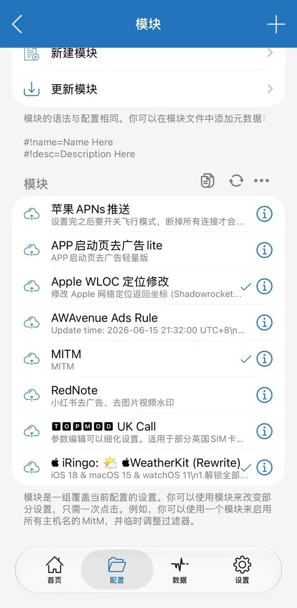

奶昔🥤
@realNyarime
如果你跟我一样用小火箭，我也推荐这个规则，简单导入就行～

奶昔🥤
@realNyarime
草莓泡芙老师分享loon也不错，我一直用的是Shadowrocket，也就是小火箭
怎么导入其实跟她的教程应该是异曲同工之妙，就不再过多赘述了
去广告，清爽、舒服！点个好评喵😋 https://t.co/M8eQDk5HuL https://t.co/HbGZDpi8K5
小鸡翼
@xiaojiyiobo
@SnozakiSakura 1. 小火箭 → 配置 → 点配置文件 ⓘ → 规则 → 右上角 +
2. 类型选 DOMAIN-SET（注意不是 RULE-SET，这个文件是域名集格式），策略选 REJECT
3. URL 粘贴 https://t.co/70KOr6m8NQ（官方省内存版，手机用这个），保存
我觉得 anti 的这个更强